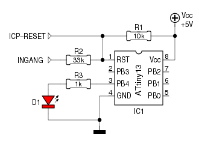

Kleine AVR's als de ATtiny13 en de ATtiny45 zijn
handige hulpmiddelen voor allerlei klusjes. Maar het gebeurt,
dat de vijf I/O-pinnen van deze achtpoters nèt niet
volstaan.
Voor zulke situaties heeft Atmel de mogelijkheid voorzien
om de RESET-pin als gewone I/O-pin te configureren. Dat heeft
echter een nadeel: door het wegvallen van de RESET-functie
kan de AVR niet meer met de gebruikelijke
ICP-methode1 geprogrammeerd
worden. Nu is een HVSP2
programmer niet zo moeilijk zelf te bouwen, maar dan blijft het
probleem dat de AVR telkenmale uit zijn voetje moet genomen
worden.

De RESET-pin bij deze AVR's heeft een onverwachte eigenschap: je
kan ze als ADC-ingang gebruiken, terwijl de RESET-functie behouden blijft.
Uiteraard kan je nooit lage ingangsspanningen meten, want dat
komt de RESET in actie. Maar je kan zonder probleem spanningen
tussen 3V en 5V meten (met Vcc als ADC-referentie, uiteraard).
De schakeling hiernaast maakt daar handig gebruik van. Een
ingangsspanning van 0V wordt door spanningsdeler R1/R2
vertaald naar een spanning van 3.8V, terwijl een ingangsspanning
van 5V resulteert in ... 5V.
De waarde van R2 mag enigzins afwijken; zowel 22k als 47k
leveren een bruikbaar resultaat op.
Het spreekt voor zich, dat het inlezen van een “digitale”
ingang via de ADC heel wat trager verloopt dan wanneer de
gebruikelijke gang van zaken gevolgd wordt.
Maar als je een extra-ingangspin bekomt voor de prijs van 1
weerstand3 en wat processortijd, is dat mooi
meegenomen.
Tussen de RESET-pin en GND kan uiteraard een condensator van
100nF geplaatst worden. Er is dan wel enige vertraging tussen
het veranderen van de ingang, en het ogenblik dat deze
verandering meetbaar wordt.
Verder blijft ICP zonder meer mogelijk. Wie het eens wil proberen, kan aan de slag met deze avr-gcc broncode , die D1 laat oplichten als de RESET-ingang “hoog” is, en dooft D1 in het andere geval.